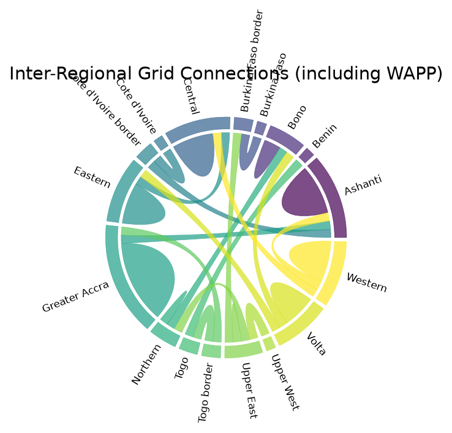

Task 3.2 · Prepared by Member 3 (Visualization Specialist)
Animated map showing substations appearing on the network as they were commissioned, from 1967 to 2022.
Open full screen →Substations positioned by real latitude/longitude, with voltage level giving height — higher-voltage nodes visually rise above the network.
Open full screen →Arcs show how many transmission lines connect each pair of regions (including WAPP cross-border links). Thicker arcs mean more connections.

Shows where transmission line infrastructure is most concentrated geographically.
Open full screen →Highlights substations and lines currently flagged as Inactive or Under Maintenance.
Open full screen →Compares utilities by line count, total capacity, regions touched, and WAPP cross-border connections.
Open full screen →